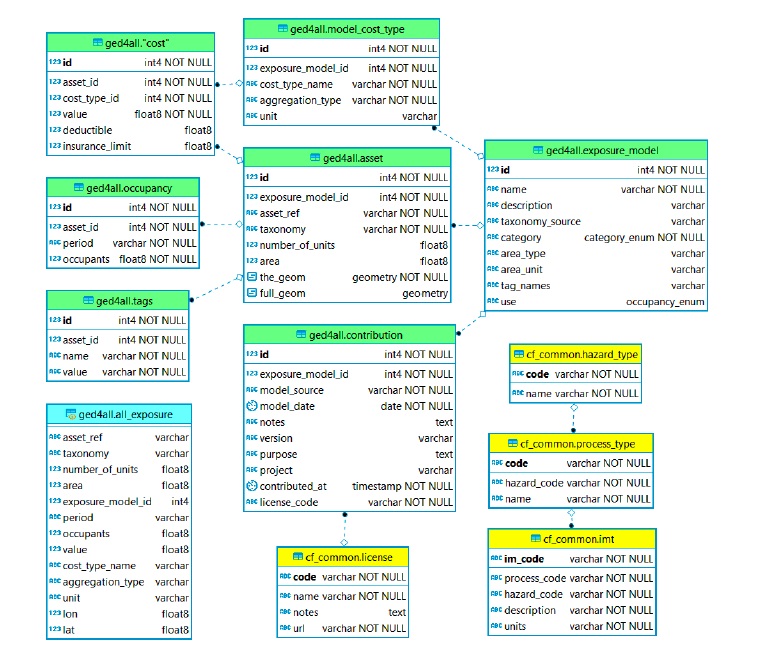

Exposure DB schema
The exposure schema was developed based on GEM Taxonomy 2.0 to accommodate the most important spatial features commonly employed in risk analysis to identify and estimate exposed value. The GED4ALL database schema contains the following tables: contribution, exposure_model, asset, occupancy, cost, cost_type, and tags.
Multiple types of structural/infrastructure assets and socio-economic exposure can be stored in the exposure database with attributes relevant to assessing risk from multiple hazards. The exposure schema provides 11 defined exposure types, for consistent classification of assets in different datasets: Residential, Commercial, Industrial, Healthcare, Education, Government, Infrastructure, Crop, Livestock, Forestry, and Mixed (as in cf_common.occupancy_enum). The tables include general attributes that can be adapted to each asset type. More specific indicators can be stored using the tags table, e.g. population gender and age, urban growth rate, GDP or others.
Exposure can be stored at multiple scales and using polygon (e.g., for a building footprint or number of buildings in a district), polyline (e.g. road network segment), and point (e.g. geolocated building at a lat,lon position). Exposure units can be assigned the number night-time or day-time occupants, to represent population exposure.

ERD (exposure schema): exposure table contents (green) and links to common tables (yellow). The schema includes a SQL view (cyan).Table: ged4all.exposure_model
Each row in this table represents a collection of assets with a taxonomy_source (GEM Taxonomy, SynerG, FAO, etc) and category (buildings, road network, etc). A model can optionally contain one or more cost types (see model_cost_type), e.g. structural, contents and can also optionally contain information about the area occupied by the assets. Finally, a model can optionally specify any number of "tags", which can be applied to each asset.
| Req | Field name | Type | Reference table | Description |
|---|---|---|---|---|
| * | id | INT | Unique number ID | |
| * | name | VARCHAR | Name of exposure model | |
| description | VARCHAR | Description of exposure model | ||
| taxonomy_source | VARCHAR | Name of taxonomy source | ||
| * | category | ENUM | ged4all.category_enum | Type of asset |
| area_type | VARCHAR | Aggregated or per asset | ||
| area_unit | VARCHAR | Unit of measure of area | ||
| tag_names | VARCHAR | Additional tag information | ||
| use | ENUM | cf_common.occupancy_enum | Usage type of the asset (e.g. residential, commercial) |
Table: ged4all.asset
Each row in the asset table represents a single asset or collection of assets, such as a building, aggregated collection of buildings, an item in an infrastructure network, or an area of farmland. The number_of_units field is used to specify the number of assets of this type at this location. The taxonomy value must be set to a valid taxonomy string using the taxonomy system specified in the exposure_model table, and identifies the typology of this asset.
There are two geometry fields providing geospatial information: - The "the_geom" field specifies a single point location and can be considered as a composite representation of latitude, longitude and a reference to WGS84. Only Point geometries are stored in this field. - The "full_geom" field is an optional representation of any geometry type (point, line, polygon, multipoint, multi-line, etc.) supported by the standard and can be used to describe the footprint of a building, regional boundaries, or lifelines.type (point, line, polygon, multipoint, multi-line, etc.) supported by the standard and can be used to describe the footprint of a building, regional boundaries, or lifelines.
| Req | Field name | Type | Reference table | Description |
|---|---|---|---|---|
| * | id | INT | Unique number ID | |
| * | exposure_model_id | INT | ged4all.exposure_model | Unique number ID of source exposure model |
| * | asset_ref | VARCHAR | Alphanumeric code supplied by user | |
| * | taxonomy | VARCHAR | Alphanumeric code for the taxonomy source | |
| number_of_units | FLOAT | Number of assets represented | ||
| area | FLOAT | exposure_model.area_unit | Area of the asset in the units specified | |
| * | the_geom | GEOM | Associated geometry data (point location) | |
| full_geom | GEOM | Associated geometry data (polygon, multiline, multipolygon...) |
Table: ged4all.cost_type
Each exposure model can optionally have one or more types of cost associated with loss or damage to assets. For example, the cost of the building structure by square meter or the cost of the contents of a single building. Each cost type entry describes a category of cost, an aggregation type and a unit.
| Req | Field name | Type | Reference table | Description |
|---|---|---|---|---|
| * | id | INT | Unique number ID | |
| * | exposure_model_id | INT | ged4all.exposure_model | Unique number ID of source exposure model |
| * | cost_type_name | VARCHAR | Type of asset cost (structural, non-structural, contents, business interruption) | |
| * | aggregation_type | VARCHAR | Aggregated or per asset | |
| unit | VARCHAR | Cost unit of measure |
Table: ged4all.cost
Each row in the cost table represents a cost of a given cost type for a given asset. The asset_id and cost_type_id fields are foreign keys used to identify an asset and model_cost_type. The value field provides the actual cost value in the unit specified in the corresponding model_cost_type entry.
| Req | Field name | Type | Reference table | Description |
|---|---|---|---|---|
| * | id | INT | Unique number ID | |
| * | asset_id | INT | ged4all.asset | Unique number ID of the asset |
| * | cost_type_id | INT | ged4all.cost_type | Unique number ID of the cost type |
| * | value | FLOAT | Cost value | |
| deductible | FLOAT | |||
| insurance_limit | FLOAT |
Table: ged4all.occupants
The occupants table is used to store information about the occupants of an asset in a given period, for example, the number of people in a given building during the day and during the night. For some cases the period might refer to a season, for example when considering livestock or agricultural assets. In some communities the term "occupancy" is used to refer to building usage, for example "industrial" or "residential"; this concept can be modelled in the GED4ALL schema using tags and/or by using a taxonomy system that supports building usage specification, such as the GEM Building Taxonomy.
| Req | Field name | Type | Reference table | Description |
|---|---|---|---|---|
| * | id | INT | Unique number ID | |
| * | asset_id | INT | ged4all.asset | Unique number ID of the asset |
| * | period | VARCHAR | Occupancy type (night/day) | |
| * | num_occupants | FLOAT | Number of occupants |
Table: ged4all.tags
Each row in the tags table represents a name and value pair for a given asset. The asset_id is a foreign key used to identify an asset. The name field represents the name of the tag while the value field contains the associated value. Tags may be used to store any named scalar information with an asset, but in particular are useful for storing socio-economic indicators and their associated values, and also for grouping assets into census tracts, for example.
| Req | Field name | Type | Reference table | Description |
|---|---|---|---|---|
| * | id | INT | Unique number ID | |
| * | asset_id | INT | ged4all.asset | Unique number ID of the asset |
| * | name | VARCHAR | Name of the tag | |
| * | value | VARCHAR | Number associated with the tag |
Types
| ENUM name | Types | Description |
|---|---|---|
| category_enum |
|
Type of asset category |